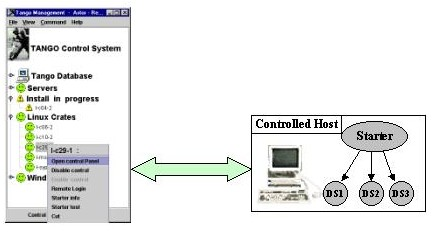

TANGO
Device Server
Device Server
|
|
|
|
|
|
Device Server |

The Starter device server ping the controlled servers during the
State polled command.
In case of answer or not, the host state is calculated, and could be read
and displayed by Astor.